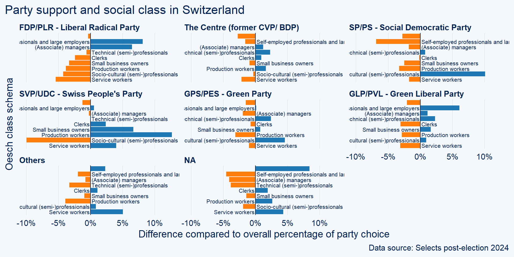
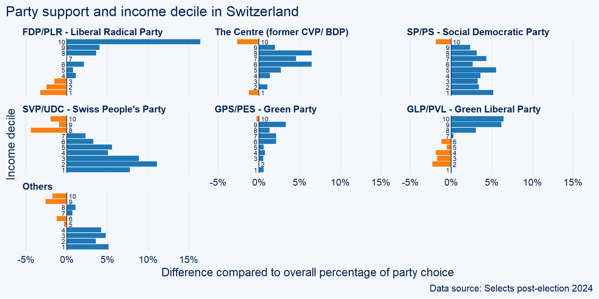
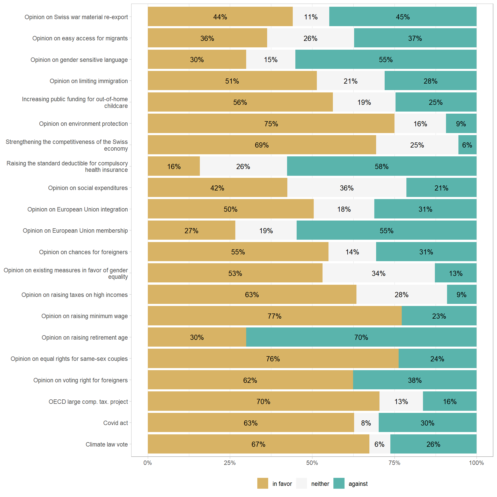

Warning
This post is still in progress and will be updated
In Switzerland, survey data are, compared to other countries, scarce, but of very good quality. More specifically, the so-called “Swiss Election Studies” (Selects) are of world-class quality and usually published one year after each Swiss national election. This summer, the last Selects studies that were made available are of utmost importance for my research on Swiss social blocs. The studies contain large samples and very interesting variables, so let’s have a look to what they offer.
A little context on the 2023 Swiss election
Since the Selects studies are about politics and elections, let’s first remind ourselves what happened during the 2023 Swiss national election. Switzerland is not famous for the turbulence of its political scene, which is often considered as boring and stationary due to direct and consensus democracy, proportional representation, federalism, a highly “diversified” government (the so-called magic formula), referendums, a high abstention rate…
But still, the stability of the Swiss model makes the small changes which tend to appear slowly and unnoticed even more interesting to analyze: because why would any political and institutional change happen in one of the most rich and successful countries in the world ?
And some change did happen in the last few years. An illustrative example are the turmoils of the governmental bourgeois-right parties, the Liberal-Radicals (FDP) and the Christian-Democrats (CVP, now “The Center”). Both these parties suffer from long-term decline in vote shares since the post-war period, and they have attempted multiple strategies to try avoiding the fall. The Christian-Democrats were the ones who suffered the most from this trend, which peaked when they lost their second seat at the federal council in favor of the SVP (Swiss People’s party, Switzerland’s extreme right party) in 2003. In 2021, the party merged with another small bourgeois party to create “The Center”, in the hope that this new look would benefit them. In terms of political program, The Center is still promotes some forms of “soft neoliberalism”, that is to say, a neoliberal transformation of the Swiss model with some compensation measures. The program is close to that of the FDP, although the latter seeks less compromises. Why would the history of these two parties interest us ? Because in the last 2023 election, The Center almost surpassed the FDP in terms of vote shares (14,25% for FDP vs 14% for Center, The Center was actually above before a calculation mistake was corrected) for the first time in Swiss history. Actually, The Center did surpassed the FDP in terms of seats in the National Council, which is still an important shift in the political landscape: does that mean that there is a successful “centrist” strategy now in Switzerland ? Is that strategy destined to succeed in the future ?
Another important element of the 2023 election is the downfall of ecological parties. There are two ecological parties in Switzerland: the Greens and the Liberal Greens. Whereas other countries generally have only one Green party, Switzerland has the peculiarity of having a Liberal Green party, which wants to dissociate itself from the Greens, considered as to extreme on the left in terms of economic policy. However, both these parties suffered from important backlash in the election: the Greens lost around 3% points and the Liberals 0,3% (with 6 lost MPs). Can we see and understand this drop of interest for ecological issues in the Selects data ?
Finally, the winners of the election are the SVP and the Socialist Party (SP). The latter has won some battles in the last few years, for instance during the vote for a third rent pension rent. Was the SP successful in broadening its social basis ? What about the SVP ? Let’s have a look.
In this post, I will first offer a descriptive analysis of party support. Then, the preferences of Swiss citizen regarding a set of policy preferences will be analyzed.
Party support
Figure 1 shows voting intention of individuals who responded to the survey (before the election). To visualize the difference between the sample’s voting intentions and the final results of the election, I added the latter on the graph (as black dots). Some discrepancies between the sample and the final results are striking, especially for SVP’s support. In the sample, only 17,8% Swiss citizen declared voting for the SVP, whereas the party gathered 28% of the votes, more than 10 percentage points difference. Two hypotheses could explain this discrepancy: first, the SVP’s social basis, as most far right parties’ supporters, tend to hide their favorite party in surveys (what is known as “desirability bias”). Another explanation could be that SVP’s voters were undecided or changed their mind at the last time. The score of the SP and FDP are aligned with the survey responses, whereas the Center was underestimated and the vote for the Greens overestimated.
As expected, if we replicate the same graph using post-election rather than pre-election data, the percentages are more aligned with the final results. However, the support for the SVP is still underestimated, while the support for the Center and the FDP is overestimated and underestimated for the two green parties and the SP. The discrepancies could come from the fact the variable includes the hypothetical vote choice of those who did not vote at the election.
The descriptive statistics of party choice thus confirm the slight changes in Switzerland’s politics: the green parties have experienced a strong electoral defeat while the Center seems to have found a strategy to halt its long-run decline, which is not the FDP’s case,
How does the variable of voting intention to the 2023 election compares with the previous election (2019) ? Swinging voters between elections are often represented in sankey diagrams, which is what Figure 2 shows. The sankey diagram shows that there is no tremendous between-parties flows: the blocs at both end of the diagram stay more or less the same. However, one can still notice some small flows: SP and the Greens seem to exchange their supporters, which means that the flows of left-wing voters happen as exchanges between the SP and the Greens. The SVP draw some voters from the undecided and the FDP. Interestingly, some parts of former SP and FDP supporters moved to the Liberal Greens.
Party support and socio-economic characteristics
From which parts of the population does each party draw support ? What are the social bases of the Swiss left, center and right parties ? How do socio-economic characteristics influence party support in Switzerland ? Social conflict is often considered as highly pacified in Switzerland. As a result, observers tend to consider that there is no important social divide based on class and socio-economic characteristics in the country. Considered to be a very rich and “post-materialist” country, social conflict in Switzerland should play at the level of cultural preferences rather than economic policy preferences. As explained by Piketty (2019) and various other social scientists, European left-wing parties used to draw strong support from lower and dominated social classes and this support had economic motives since the working class supported the left in hope that the latter would increase its standard of living, while right-wing parties were draw more support from high income voters. However, Rennwald and Zimmermann (2016), Rennwald (2014), Rennwald (2020) showed that party support was more complex. For instance, in the post-war period the support for each Swiss party was more hybrid that bases only on one particular social class. The Swiss left was thereby supported not only by the working class, but also by “socio-cultural professionals” (teachers, researchers, journalists…) while the right gathered managers, self-employed, artisans, shop-keepers and large employers. Thus, as demonstrated by Amable (2017), Amable and Palombarini (2018) for France, the left and right blocs were heterogeneous in their social composition, a fact which is often under-estimated.
What is the situation now ? Is the Swiss socialist party still supported by the working class and socio-cultural professionals, and the right by managers, self-employed, artisans and large employers ? We can descriptively explore these hypotheses by taking a social class variable from the dataset (I used here the Oesch class schema, because it is directly available in the post-election dataset), computing the percentage of party support for each party across these classes, and comparing these proportions with the overall proportions: if a social class supports a party with a proportion higher than the overall proportion, one can say that this social class is an important supporter of this party. To do so, the so-called diverging bar charts are a useful visualization.

Figure 3 thus show the percentage difference in party support across social classes compared to the overall mean. One can see that the FDP draws strong above-average support from large employers and managers, the Center from managers, technical professionals, clerks and production workers (even though the positive differences are not that large), the SP above all from socio-cultural professionals, the SVP from production and service workers and from clerks and small-business owners; the Greens from from technical and socio-cultural professionals; and the Liberal Greens from large employers and slightly from managers, technical professionals, small business owners and technical professionals. It is also important to note that service and production workers also tend to not support any party, as shown in the no answer (NA) graph.
If one does not trust the Oesch class schema, one can also look at more simple socio-economic factors such as income deciles. Figure 4 shows the support for each swiss party for each income decile.

The parties for which the support clearly increases as income increases are the FDP and the Liberal Greens. This means that both these parties are supported by wealthy Swiss citizen. The correlation seems to be negative for the SVP, whereas the support for the SP and the Greens does not significantly change across income deciles (although it slighlty increases for the Greens). The correlation is also positive for the Center, but support drops at the highest decile.
From Figure 3 and Figure 4, we can conclude that the SP is now above all supported by socio-cultural professionals and does not draw above average support from production workers, which tend to rather support the SVP. However, when one looks at income deciles, the SP gathers above-average support from each decile except the tenth.
Policy preferences
An advantage of post-election Selects data is the wide variety of questions which capture the preferences of Swiss citizen on a set of cultural economic issues. Figure 5 shows the responses to these questions. For simplicity I reduced the number of categories when possible (for instance merging the “rather in favor” and “strongly in favor” responses).

Several remarks can be made looking at Figure 5. First, Swiss citizen tend to be conservative regarding immigration issues, except when asked about whether foreigners should have voting rights. This seems paradoxical at first sight: why anti-immigrants would accept foreigners to vote ? In Capitalism, Alone (2019), Milanovic explains that such paradox makes sense when one considers the trade-off between immigration and foreigners’ rights from the point of view of the native population. The idea is that there is a negative relationship between foreigners’ rights and immigration: natives would accept more immigration if immigrants are not granted much rights and, conversely, they would grant more rights to the existing foreigners, but only if immigration is limited. The responses to the immigration-issues questions in Figure 5 show that Swiss people chose the latter point of the immigration-right trade-off curve.
Second, anti-EU membership is a structuring preference of Swiss citizen, who rejected the membership to the European Economic Area in 1992 and have been rather anti-EU ever since. Figure 5 shows that, despite the fact that Swiss citizen still are agaisnt EU membership, they are in favor of European integration (but in the sense of integration through bilateral agreements.)
Third, regarding so-called “cultural issues”, Swiss people are rather conservative regarding new cultural issues, while being rather progressive on issues which are now decades old. They are thus against imposing gender sensitive language, but are in favor of equal rights for same-sex couples.
Finally, Swiss citizen are, overall, rather on the left on economic issues. 77% of the sample supports a raise in minimum wages, 70% are against raising the retirement age and 63% are in favor of increasing taxes on high income. This stands in stark contrast with the idea that Swiss citizen have one of the most “liberal spirit”.
References
Amable, Bruno. 2017. Structural Crisis and Institutional Change in Modern Capitalism: French Capitalism in Transition. Oxford University Press. https://doi.org/10.1093/acprof:oso/9780198787815.001.0001.
Amable, Bruno, and Stefano Palombarini. 2018. L’illusion Du Bloc Bourgeois: Alliances Sociales Et Avenir Du Modèle Français. Raisons d’Agir. Paris.
Piketty, Thomas. 2019. Capital Et Idéologie. Le Seuil.
Rennwald, Line. 2014. “Class (Non)voting in Switzerland 1971-2011: Ruptures and Continuities in a Changing Political Landscape.” Swiss Political Science Review 20 (4): 550–72. https://doi.org/10.1111/spsr.12124.
Rennwald, Line, and Adrian Zimmermann. 2016. “Le Vote Ouvrier En Suisse, 1971-2011.” Social Change in Switzerland, no. 4. https://doi.org/http://doi.org/10.22019/SC-2016-00001.